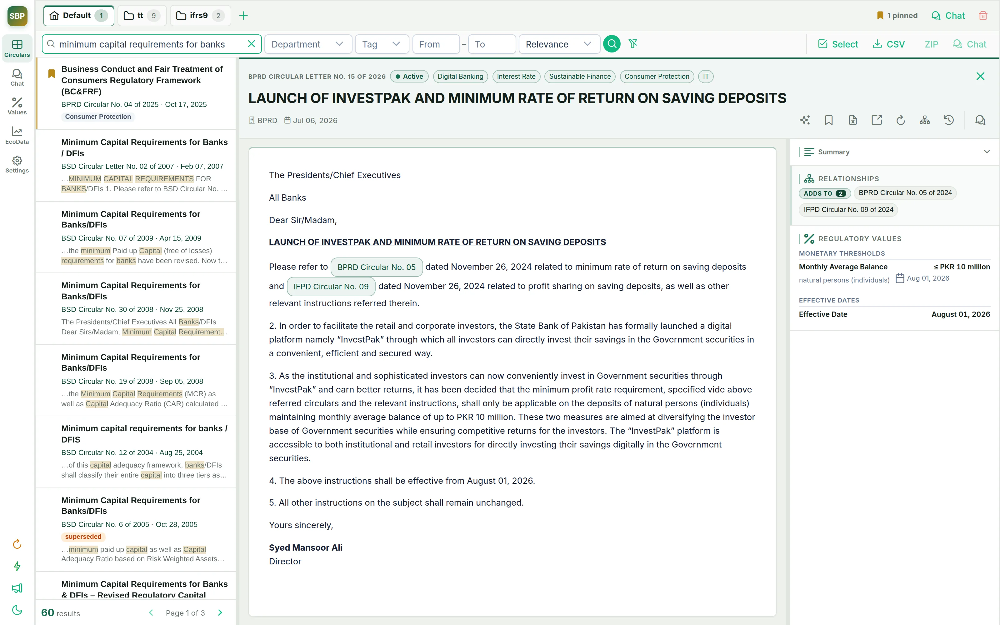
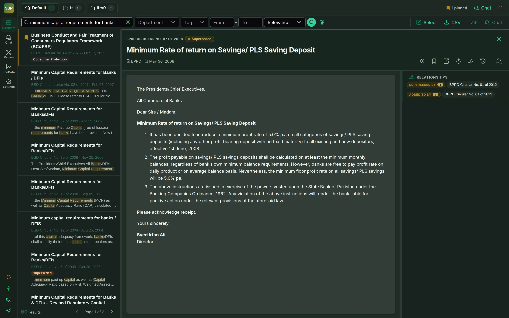
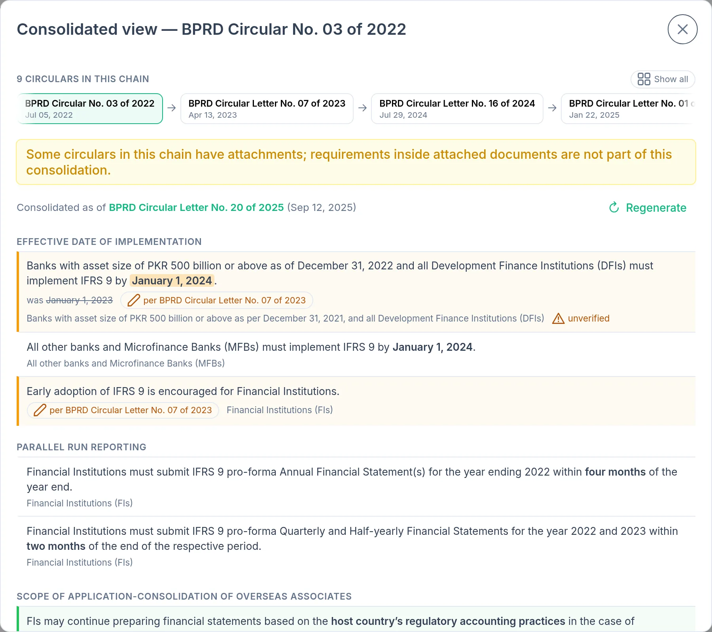
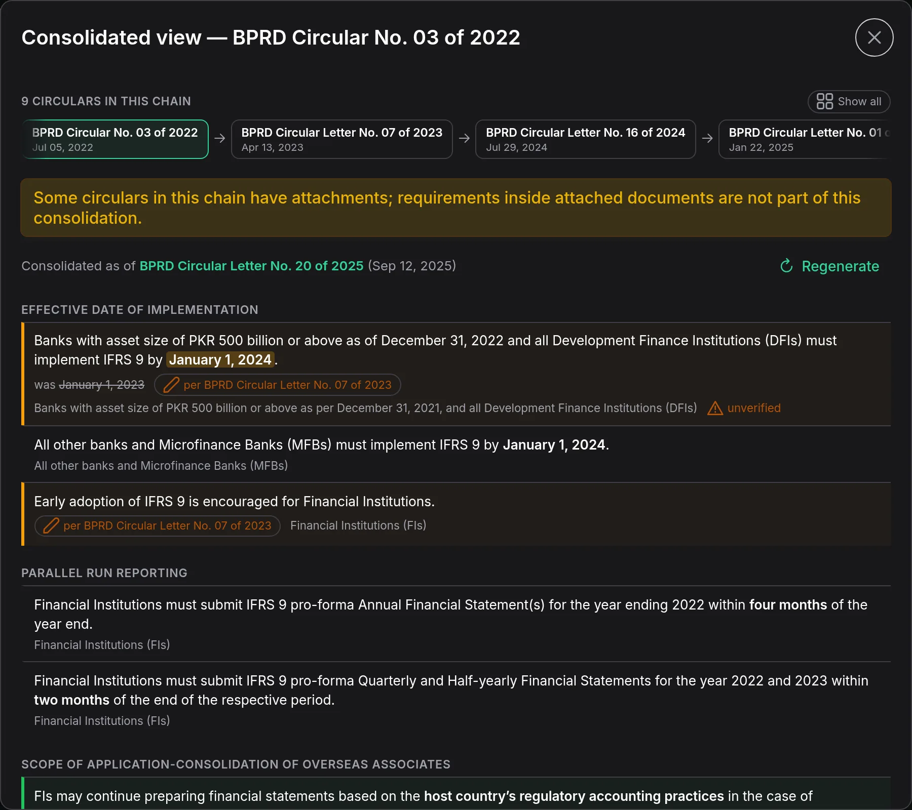
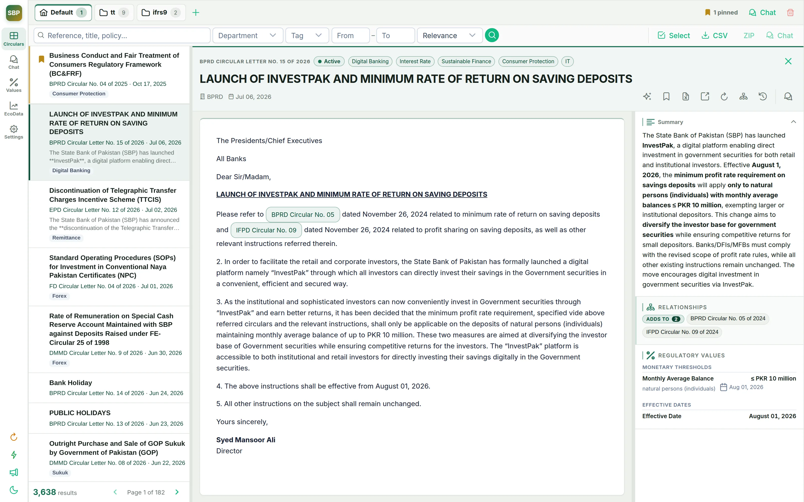
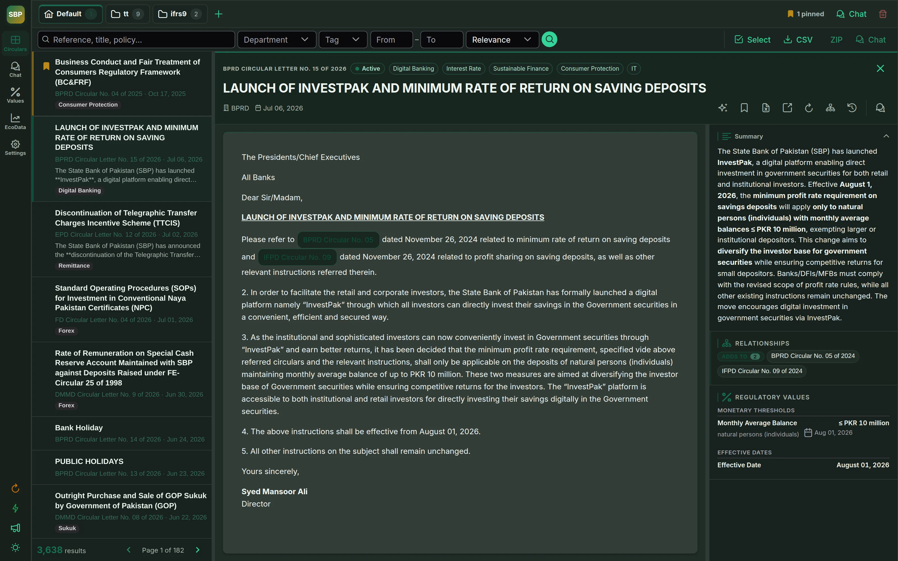
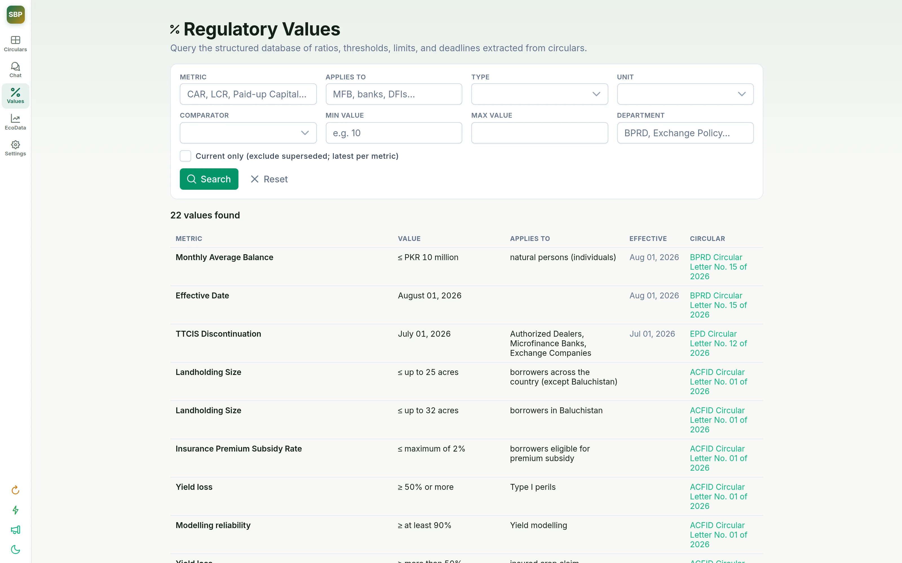
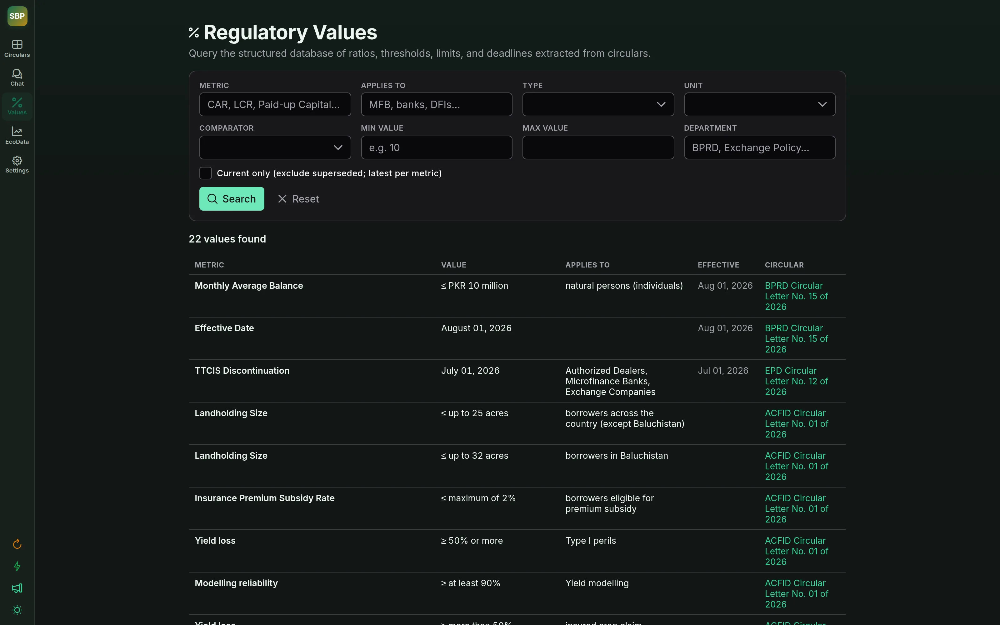
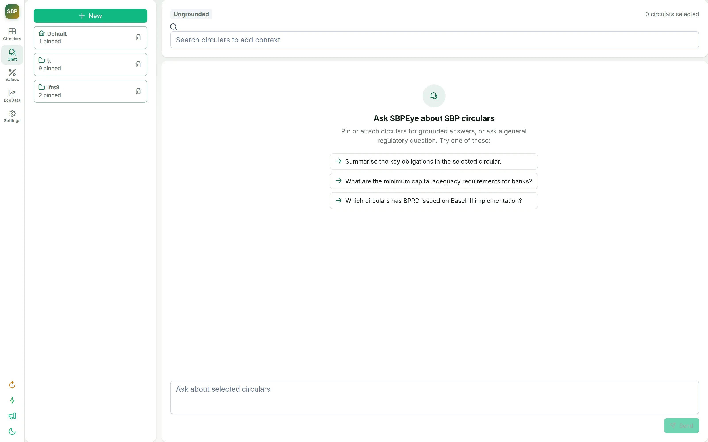
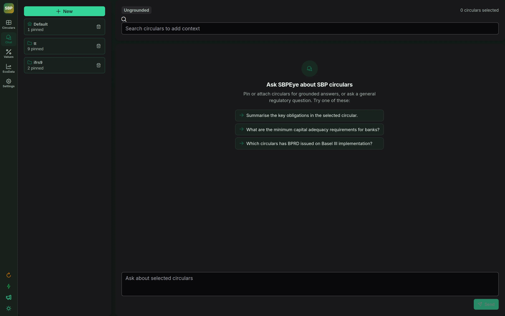

Every circular. Every amendment.
One source of truth.
An independent index of every State Bank of Pakistan circular and economic dataset — built to tell you what a regulation actually says today.
- Complete index — 3,600+ circulars, annexures & economic datasets in one place.
- Hybrid search — keyword + semantic; ask in plain English.
- AI on every circular — summaries, checklists & extracted regulatory values.
- Relationship engine — amendment chains rebuilt to what stands today.


A circular is never the whole story.
- SBP regulation accretes — amended, extended, clarified, superseded.
- One 2008 instruction now carries 43 linked circulars across 18 years.
- Read any single one — even the newest — and you miss what changed and what still stands.
18 years · 43 circulars · one answer. SBPEye extracts typed links — amends, supersedes, adds to, clarifies, cancels — from every circular and its annexures, then walks the chain both ways.
The related circulars, mapped.
- Each circular is linked to the ones it amends, adds to or supersedes.
- Open one circular — and its whole neighbourhood opens with it.
One regulation, its whole lineage. SBPEye’s own graph for BPRD 05/2024 — links walked both ways, so you always land on what still stands today.
What the regulation says today.
- SBPEye walks the chain and rebuilds the as-amended regulation.
- Every requirement carries the exact circular that set it.


Ask in plain words. Find what the wording hides.
- Keyword search only returns the words you type.
- SBPEye fuses full-text ranking with vector similarity.
- A plain-English query lands on the right circular — even when it never uses your word.
- Still narrow by department, tag or year.
-
0.89matchSH&SFD Circular No. 06 of 2025
Pakistan Green Taxonomy
SHSFD 10 Dec 2025 CurrentDefines what qualifies as green finance — solar generation included, though the word “solar” never appears. -
0.85matchIH&SMEFD Circular Letter No. 09 of 2022
SBP Financing Scheme for Renewable Energy
SHSFD 16 Jun 2022Subsidised credit for renewable energy projects — solar by another name. -
0.81matchIH&SMEFD Circular No. 11 of 2015
Scheme for Financing Power Plants Using Renewable Energy
SHSFD 03 Aug 2015Concessionary financing for renewable power generation — the original green-energy scheme.
Intelligence, not just retrieval.
- SBPEye doesn’t just find the circular — it reads it.
- Prose becomes summaries, checklists and structured data.
Summaries, checklists & cross-references
- An AI summary and topic tags on every circular.
- Compliance checklists — exportable to Excel.
- Inline cross-references you can jump straight through.


Intelligence, not just retrieval.
- SBPEye doesn’t just find the circular — it reads it.
- Prose becomes summaries, checklists and structured data.
Ratios, thresholds & deadlines, extracted
- Ratios, thresholds, limits and deadlines pulled into a database.
- Query it: “thresholds above 10%” or “current minimum capital for MFBs”.
- Every value linked back to the circular that set it.


Intelligence, not just retrieval.
- SBPEye doesn’t just find the circular — it reads it.
- Prose becomes summaries, checklists and structured data.
Workspaces that answer from your circulars
- Pin circulars into a research workspace.
- Interrogate them with streaming answers.
- Grounded in the pinned documents — not the model’s imagination.


A full regulatory workbench.
- Beyond circulars — the tooling that keeps the whole desk usable.
EcoData, same roof
SBP economic datasets — auctions, OMO, rate corridors — indexed with freshness tracking and one-click AI summaries.
Quiet automation
Background sync keeps the index fresh — live status, staleness flags and a batch CLI.
Bring your own model
LM Studio (local), OpenAI or Gemini via one switch — sensitive work never leaves the machine.
From SBP’s website to an answerable question.
Scrape
Circulars, annexures & EcoData via BeautifulSoup + pdfplumber.
Index
FTS5 keyword index + ChromaDB embeddings, kept in lockstep.
Analyse
LLM pass per circular: summary, tags, checklist, values.
Link
Typed relationships from body and annexures; chains detected.
Consolidate
Graph traversal rebuilds the as-amended regulation with provenance.
Internal project. Independent indexer — not affiliated with the State Bank of Pakistan. Screenshots are live captures from the running app. Open SBPEye →